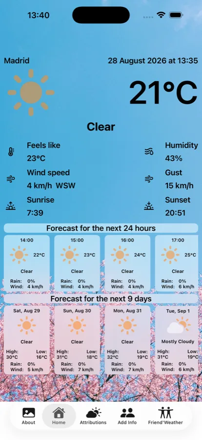
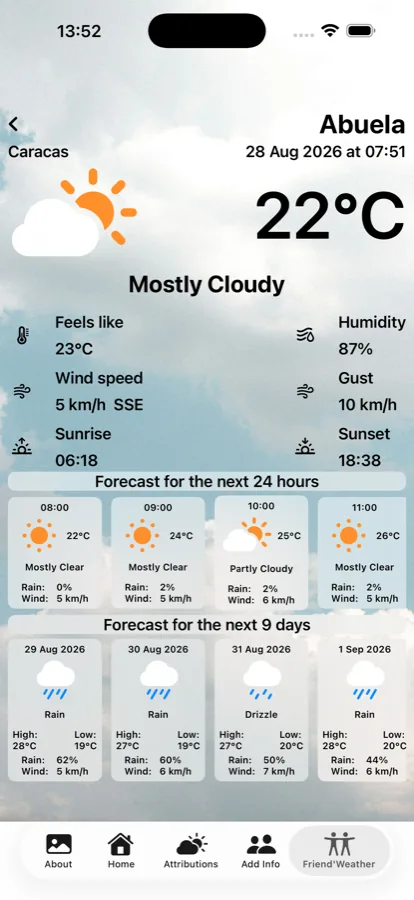
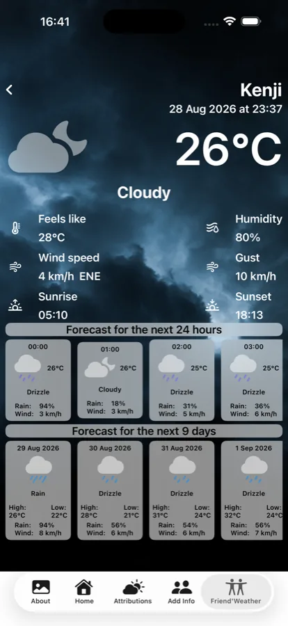

En Venezuela, «Llegó Pacheco» quiere decir que llegó el frío. La expresión recuerda a Antonio Pacheco, un cultivador de flores que bajaba de Galipán, en el cerro El Ávila, a vender flores en Caracas a finales de cada noviembre. Su llegada coincidía con el inicio de la temporada fría, y el nombre se quedó pegado a la temporada. La app lleva el nombre de la expresión, no del florista.
SwiftUI, Swift 6, iOS 26 o posterior. WeatherKit para los pronósticos, SwiftData para los amigos guardados, MapKit para buscar lugares. Unas 5.200 líneas, 66 tests, y 900 líneas más en el widget.
Una sola compilación cubre el iPhone y el iPad, y esa misma compilación funciona en los Mac con chip de Apple, donde se instala desde el Mac App Store. No hay una versión aparte para Mac. En el iPad el tiempo ocupa dos columnas —la fotografía a toda altura a un lado, los datos y los dos pronósticos al otro— y los amigos pasan a una barra lateral.
Cada pantalla se construye sobre una fotografía de la condición actual: la lluvia y la nieve caen encima, el viento la desplaza despacio, y un degradado mantiene legibles los datos. Cuatro de esas fotografías siguen siendo los archivos originales de 393×852, sobre todo detrás de tormentas nocturnas y nieve.
Un día del pronóstico de 9 días y una hora del de 24 horas se abren cada uno en su propia pantalla, y a un amigo se le puede situar escribiendo coordenadas.
El tiempo de tus amigos es un widget para la pantalla de inicio del iPad y el escritorio del Mac: cuatro tarjetas una al lado de la otra, primero tu lugar y después hasta tres amigos, cada una con su tiempo y su hora local, y cada una abre ese lugar en la app. Viene solo en el tamaño extragrande, y por eso no hay widget para el iPhone.
Angular 22 y TypeScript. Se puede instalar, y sigue funcionando sin conexión: la app, los dos idiomas y todas las fotografías que ya hayas visto. Unas 6.300 líneas, 199 tests. Sus fotografías están todas a tamaño completo, y tiene un diseño de escritorio que el teléfono no necesita.
Sus pronósticos vienen de Open-Meteo y no de WeatherKit, porque una web hecha de archivos estáticos no puede guardar una clave de API. Esa única restricción da forma a todo el proyecto, y es la razón de que el navegador pueda decirte otra cosa sobre el tiempo de mañana: Pacheco ya está en la web trata las dos cosas.

Gratis, para iPhone y iPad con iOS 26 o posterior, y para Mac con chip de
Apple con macOS 26 o posterior.
Pacheco en el navegador — en cualquier dispositivo, sin instalar nada.
Para la ficha del App Store: Soporte · Privacidad